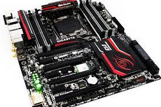

Tarjeta Madre
La tarjeta madre, placa base o motherboard es una tarjeta de circuito impreso que posibilita la integración de todos los componentes de una computadora. Para esto, cuenta con un software básico conocido como BIOS, que le permite cumplir con sus funciones.
Funciones de la tarjeta madre
Pero ¿qué funciones son básicamente las que realiza toda tarjeta madre o placa base? Son varias y todas importantes y fundamentales para conseguir el funcionamiento correcto y óptimo de cualquier ordenador.
En concreto, entre dichas tareas se encontrarían la comunicación de datos, el control y el monitoreo, la administración o la gestión de la energía eléctrica así como la distribución de la misma por todo el computador, la conexión física de los diversos componentes del citado y, por supuesto, la temporización y el sincronismo.
